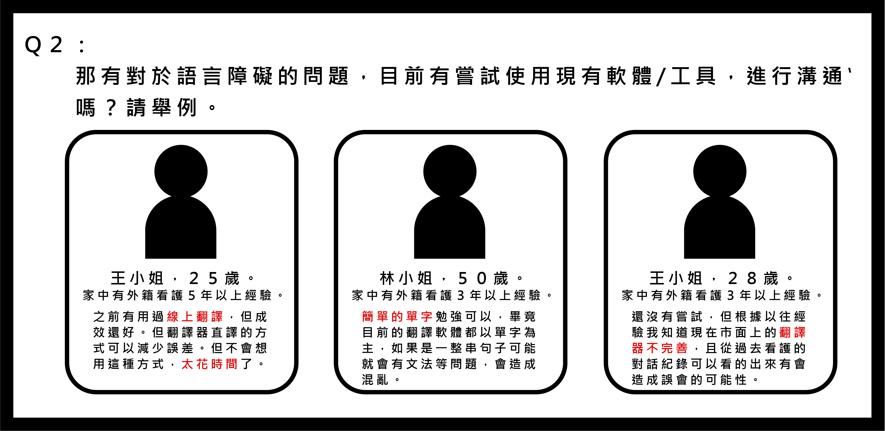

產品UX提案
譯起拼-解決外籍看護工與高齡者家庭在語言溝通障礙
創新設計概念發想，參與2020林口新創園跨界超越競賽

在外籍看護已經成為台灣重要勞力資源的下，外籍看護的需求不斷增加，外籍看護與被照護者家屬的語言障礙是現在許多被看護家庭的痛點。由於無法理解對方的語言導致溝通困難重重，任務交代上或是規定無法透過溝通完整的傳達。 本提案以此為前提，進行量化與質化調查，並以相關產品進行分析，提案以外籍看護及照護者家庭為主要使用者的工作翻譯系統。
薪資低
文化衝擊
訓練不足
依勞動部統計，109 年 3 月底外籍移工在台人數達 71.9 萬人。外籍看護除了照顧病人之外，根據行政院勞委會統計，有8成的外籍看護還須兼做其他工作，例如居家清潔。因此外籍看護這件事情已經是台灣不可避免、急迫需要的人力資源。 然而根據勞動部於108年「外籍勞工管理及運用調查」顯示，事業面及家庭面雇主管理及運用移工時，有遭遇困擾分別占38.2%及35.3%，主要均為「語言溝通困難」。
依照文獻調查以及資料分析後，組織問題訪談使用者，調查現在外籍看護與被照護者語言溝通上問題，並發掘現有痛點。
透過翻譯系統使任務能夠快速傳達，打破語言上的阻礙，讓外籍看護有良好工作環境，受照顧者也獲得妥善照顧。